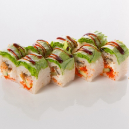

История изобретения этого популярного блюда насчитывает более 1300 лет. Название суши (или «суси» — до сих пор идут споры о правильном произношении иероглифа 寿司), как это ни странно, никак не переводится. Или, точнее, существует такое множество толкований двух иероглифов, составляющих это слово, что его можно трактовать с одинаковым успехом и как «маринованная рыба», и как «приуготовление к долголетию», и как пожелание счастья. Как часто случается с древними кухнями, к числу которых относится японская, изобретение блюда имеет отношение не к его кулинарным достоинствам, а к способу хранения того или иного продукта.
Считается, что впервые сырую рыбу и рис японцы соединили для того, чтобы хранить рыбу, и произошло это в 6 столетии нашей эры. По другим данным, изобретение сделано еще на тысячу лет раньше, и его честь принадлежит жителям Юго-Восточной Азии, откуда оно дошло до Китая. А уж от китайцев секрет хранения рыбы в рисе попал в Японию. Выпотрошенные тушки серебристого карася «фуна» плотно обкладывали рисом, помещали в бочонки, перекладывая все это солью, и в течение нескольких недель шло естественное брожение. Затем рыбу ели, а рис выбрасывали, что, конечно же, было крайне расточительно, но все же лучше, чем отравиться в эпоху до изобретения холодильника.
В конце 17 века с ростом производства риса из него стали готовить рисовый уксус, который в свою очередь начали добавлять в рис, для придания пикантного кисловатого вкуса, а рыбу и морепродукты с таким рисом начали подавать в сыром виде, то есть из процесса приготовления исключалось брожение. Сначала существовали специальные деревянные формы для прессовки риса, а вот суши в современном виде появились не так давно — в 19 веке, и произошло это в городе Эдо, как тогда именовался Токио.